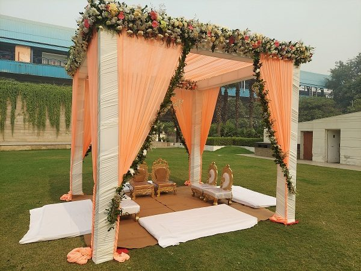

Home · Blog · Best Wedding Decorators in South Delhi – Showmaqers
Best Wedding Decorators in South Delhi – Showmaqers

Every couple dreams of a beautiful wedding—perhaps on a beach, in a palace, or at a destination venue. But when budget constraints arise, many feel that such dreams are out of reach. That’s where Showmaqers comes in. We specialize in theme-based weddings and party decorations that bring your dream setting to life—right in your city, and within your budget.
At Showmaqers, we believe you shouldn’t have to compromise on your vision just because of location or cost. Our experienced décor team is skilled at transforming ordinary spaces into stunning, personalized venues that reflect your taste, theme, and story. Whether it’s a royal-themed wedding, a romantic floral setup, or a glamorous party look—you imagine it, and we’ll create it.
Why Decoration Matters?
Decoration plays a vital role in the success of any event. While catering and entertainment are important, it’s the visual appeal that sets the tone and atmosphere. Just like food is better enjoyed when well-presented, your event becomes more impactful when the décor is on point.
Imagine attending a wedding or party without any decoration—it would feel incomplete and lifeless. Beautiful décor not only enhances the guest experience but also adds that essential “wow factor” to your event. It sets the mood, tells a story, and leaves a lasting impression on everyone attending.
What We Offer
From entry gate decoration to complete venue styling, we handle it all. Our offerings include:
- Royal, floral, or luxury-themed entry gates
- Custom wedding stage decoration
- Elegant hall and passage setups
- Lighting, floral, and balloon décor
- Customized solutions for weddings, parties, birthdays, and events
No matter the size or type of your event, we offer solutions that are creative, flexible, and budget-friendly.
We at Showmaqers prioritize your preferences, ensuring each event is as unique as the people behind it. Our team is passionate about designing memorable experiences that go beyond expectations.
So if you’re looking for the best wedding decorators in South Delhi , let Showmaqers bring your vision to life with style, creativity, and perfection.
Book your event with us today—because your dream celebration deserves nothing less than extraordinary.